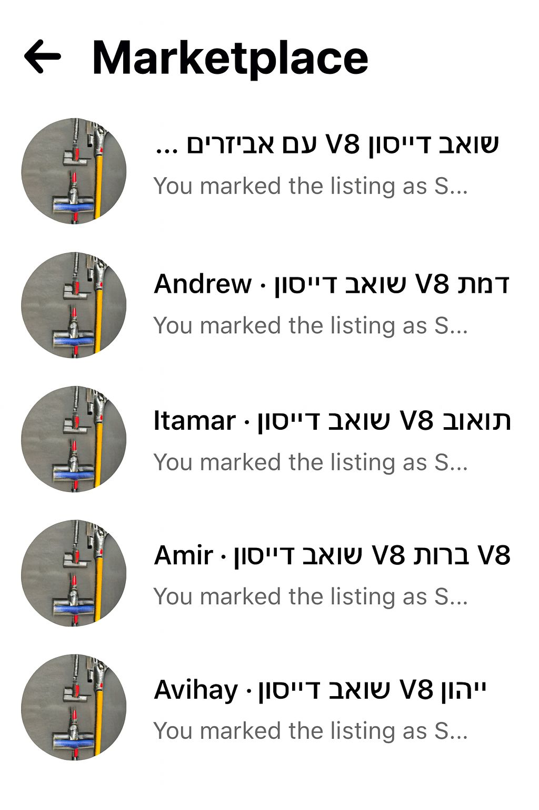

בעידן ה־AI אין תירוצים לבאגים בפרודקשן! 🐞
פורסם במקור ב LinkedIn
בעידן ה־AI אין תירוצים לבאגים בפרודקשן! 🐞
בשבוע שעבר ניסיתי למכור מוצר במרקטפלייס של פייסבוק.
בסיום התהליך הופיעה הודעה: האם להעביר את השיחות לארכיון. לחצתי כן - וכל השיחות נשארו לי ב־Inbox.
במבט ראשון זה נראה כמו באג קטן, אבל הוא מצטבר. כל מי שמוכר בפלטפורמה מגלה שהאינבוקס שלו מתמלא בהודעות ישנות, עד שהופך לבלתי אפשרי לנהל בו סדר. קשה להאמין שאף אחד לא דיווח על זה. סביר להניח שכן. וזה עדיין שם.
הדבר המעניין הוא שמאחורי הבאג הזה עומד מפתח בשר ודם. בני אדם הם אלו שכתבו, בדקו ואישרו אותו.
קל לשפוט מערכות AI על טעויות במימוש, ואנחנו עדיין רחוקים ממצב שבו הן כותבות קוד ללא תקלות בכלל. אבל מהניסיון הקצר שלי, כבר היום ה־AI עוזר לצמצם משמעותית את כמות הבאגים שהצוות מייצר. הוא לא מתעייף, לא מדלג על מקרים נדירים, ולא מאבד ריכוז אחרי לילה ללא שינה - כמו רכב אוטונומי שנמצא כל הזמן בדריכות מלאה.
יכול להיות שעדיין רחוק היום שבו AI יבטל לחלוטין באגים בפרודקשן, אבל נדמה שהוא כבר עכשיו מתקרב להיות "מפתח זהיר יותר" מרובנו.
אם עדיין לא עברתם להשתמש בפיתוח מבוסס LLM - הבאג הבא הוא עליכם
